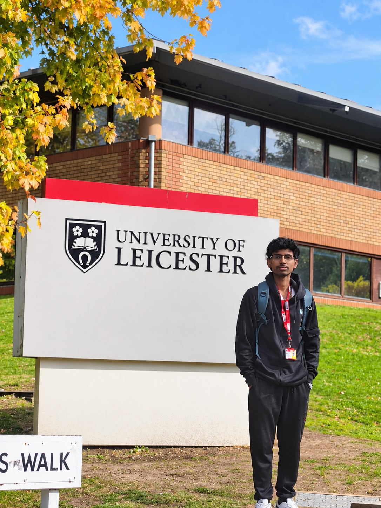

AI / ML ENGINEER · SOFTWARE DEVELOPER
I build thoughtful software and intelligent systems, turning complex ideas into useful products.
I build practical AI and software systems—from agent tooling and observability to NLP, machine learning, and full-stack applications. Currently pursuing an MSc in Artificial Intelligence with Industry at the University of Leicester.
EXPLORE MY WORK ↗BASED IN LEICESTER, UNITED KINGDOM

AI curiosity. Engineering discipline.
I’m an AI/ML Engineer and Software Developer based in Leicester, UK.
I’m Dinakar Nayak Narasimha Murthy, a Computer Science graduate specialising in Artificial Intelligence and Machine Learning, currently studying MSc Artificial Intelligence with Industry at the University of Leicester.
I love turning complicated problems into simple, useful software — from AI agents and NLP systems to research models and full-stack applications.
A software engineer who enjoys taking ideas from a notebook to something people can use.
My work spans language technologies, machine learning, backend APIs, and full-stack applications. More recently, I’ve been building tools around AI agents, including a human-reviewed coding agent and an observability workbench for tracing and evaluating agent runs.
I’m currently pursuing an MSc Artificial Intelligence with Industry at the University of Leicester, developing my understanding of computational intelligence, AI security, responsible AI, and production-minded engineering.
Curious about intelligent systems. Grounded in engineering.
MORE ABOUT ME · More about my journey on LinkedIn ↗A simple engineering loop behind my AI/ML and software work: understand the problem, prototype quickly, validate the idea, then turn it into something useful.
Clarify the user, constraints, data and outcome before choosing a technology.
Test models, agents, APIs and interfaces with small, measurable experiments.
Evaluate outputs, reliability, accuracy, latency and the gaps that still need work.
Connect the pieces into a maintainable product with clear interfaces and thoughtful UX.
Selected projects across AI, machine learning, NLP and software engineering.
Explores generative approaches to fraud detection with GANs, VAEs, XGBoost, and SHAP explainability.
↗Speech translation with speech-to-text and text-to-speech capabilities.
↗Coursework on neural networks, recurrent models, and sequence learning. Repository: DeepLearningAssignments.
↗Three featured builds presented as interactive case studies. Hover, move and scroll to explore the layers.
Generative approaches, XGBoost and SHAP explainability brought together as a practical machine-learning project.
EXPLORE PROJECT ↗Speech-to-text, translation and text-to-speech connect into an interactive language workflow.
EXPLORE PROJECT ↗Neural networks, recurrent models and sequence-learning work presented as a focused research track.
EXPLORE PROJECT ↗Recent AI agent work, applied machine learning, NLP, APIs, software engineering, and research.
A human-reviewed coding agent that turns a GitHub issue into a proposed patch, validates it in an isolated Docker sandbox, and can open a draft PR.
A self-hostable workbench for inspecting AI agent traces, latency, errors, token use, estimated cost, and repeatable output evaluations.
Explores generative approaches for fraud detection, combining GANs and VAEs with XGBoost and SHAP-based explainability.
A FastAPI video agent for media processing, transcription, metadata generation, and semantic search.
AI agent work exploring cancer prediction, machine learning, and explainable model outputs.
Automates learning content generation with language models and transformer-based NLP tools.
A workforce management API built around backend services, data stores, and role-based access control.
Employee management project covering attendance, leave, and permissions workflows.
An authentication service API focused on token-based user authentication.
A speech translation application with speech-to-text and text-to-speech capabilities.
Decentralized e-voting projects exploring blockchain-based approaches to voting systems.
A Flask web app for text generation, text analysis, and image recognition through an interactive interface.
A Python project applying computational techniques to genome sequencing analysis.
Coursework and implementations exploring neural networks, recurrent models, and sequence learning.
A full-stack platform project bringing together a React interface, Node.js backend, data storage, cloud, and authentication.
Explore the complete collection of AI, ML, software, research and experimental projects.
Human-reviewed coding agent with sandbox validation and GitHub workflow automation.
Python · FastAPI · LangGraph · Docker ↗ 02 · OBSERVABILITYWorkbench for AI agent traces, latency, errors, token usage, cost and evaluations.
Python · FastAPI · SQLite · Docker ↗ 03 · GENERATIVE AIFraud detection research combining generative models, XGBoost and explainability.
GANs · VAEs · XGBoost · SHAP ↗ 04 · AI · AUDIOVideo agent for transcription, metadata generation and semantic search.
FastAPI · Whisper · FFmpeg · Pinecone ↗AI and machine-learning work exploring cancer prediction and explainable outputs.
Python · Scikit-learn · XAIAutomated learning content generation with language models and transformer NLP tools.
FastAPI · Hugging Face · LLMs ↗ 07 · BACKEND APIWorkforce management API with data services and role-based access control.
Node.js · TypeScript · MySQL · MongoDB · RBAC ↗ 08 · FULL STACKEmployee management workflows covering attendance, leave and permissions.
Node.js · TypeScript · Permissions ↗ 09 · SECURITYToken-based authentication service API.
FastAPI · JWT ↗ 10 · NLP · SPEECHSpeech translation application with speech-to-text and text-to-speech.
Flask · JavaScript · NLP ↗ 11 · BLOCKCHAINDecentralized e-voting projects exploring blockchain-based voting systems.
Blockchain · Django / Flask ↗ 12 · AI · WEB APPInteractive Flask app for text generation, analysis and image recognition.
Flask · OpenAI API · NLP ↗Computational techniques applied to genome sequencing analysis.
Python · BioinformaticsNeural networks, recurrent models and sequence-learning coursework.
Python · TensorFlow · RNN · LSTM ↗Full-stack platform combining React, Node.js, data storage, cloud and authentication.
React · Node.js · MongoDB · AWS · JWTPlant and crop disease detection using computer-vision techniques.
Computer Vision · Deep LearningWeather prediction project combining a web interface with predictive modelling.
Python · Machine Learning · WebMonitoring and visualization of air-quality data through an IoT workflow.
IoT · Sensors · DataDeep-learning image classification experiment using the Caltech101 dataset.
CNN · Python · Computer VisionMedical-image classification and detection research using MRI data.
MRI · CNN · Deep LearningExploration of brain-computer interface concepts and machine-learning workflows.
EEG · ML · Signal ProcessingWeb application for automated text summarisation.
NLP · Flask · WebPredictive modelling project for market data.
Python · Machine Learning ↗Applied AI exploration for ground-penetrating radar data.
AI · Signal ProcessingEvent-focused application and platform concept.
Web · SoftwareEducation-focused application project.
Web · SoftwareStudent data and management workflow application.
CRUD · Database · Web ↗ 28 · MANAGEMENTEmployee-management application focused on robust workflows.
CRUD · Database · Web ↗ 29 · BACKENDNode.js and MySQL CRUD application experiments.
Node.js · MySQL · CRUD ↗A broad toolkit. Constantly evolving.
Technologies and methods I use across AI/ML projects, backend services and full-stack software.
Technologies and methods I’ve used across AI/ML projects, backend services, and full-stack software.
Additional tools and areas documented in the original portfolio.
A visual map of the toolkit already documented above.
Machine learning, deep learning, NLP, LLMs, computer vision and explainable AI.
APIs and application services for practical AI products.
Full-stack thinking across interfaces, interaction and delivery.
Data stores, APIs, deployment and supporting infrastructure.
Learning through real-world work. AI product development alongside additional UK work experience.
University of Leicester
Exploring AI products through research, prototyping and iterative software development.
Building an early-stage AI and software venture, shaping product direction and exploring ideas through research, prototyping, and iterative product development.
GPT-based course generation, NLP pipelines, LLM fine-tuning and deployment.
Worked in a fast-paced fulfillment environment, contributing through teamwork and reliable operations.
Dayananda Sagar University · graduated with 8.31/10.
Formal study in computer science and AI, now extended through postgraduate work in artificial intelligence.
Formal study in computer science and AI, extended through postgraduate work in artificial intelligence.
University of Leicester · United Kingdom
Coursework includes AI and machine learning, computational intelligence, AI security and ethics, software engineering, big data, predictive analytics, and generative development.
Specialization in Artificial Intelligence & Machine Learning
Dayananda Sagar University · Bengaluru, India
St. Joseph Indian Composite PU College
74.50% scoreContinued learning, made concrete.
Credentials across machine learning, application development, cybersecurity, and programming.
Milestones across AI, engineering, research and education.
My GitHub is home to experiments in AI agents, observability, machine learning, NLP, and full-stack development. Start with the newest work, or browse the full repository archive.
Let’s make something useful and thoughtful.
Open to conversations about AI/ML, software engineering, collaboration, and new opportunities.
AI/ML · Software Engineering · Research · Collaboration
EMAIL · dinakarnayak4248@gmail.com ↗